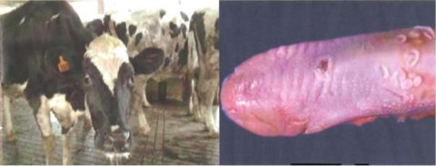
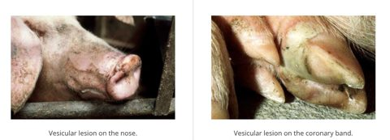
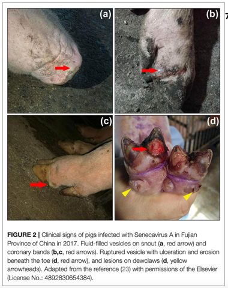
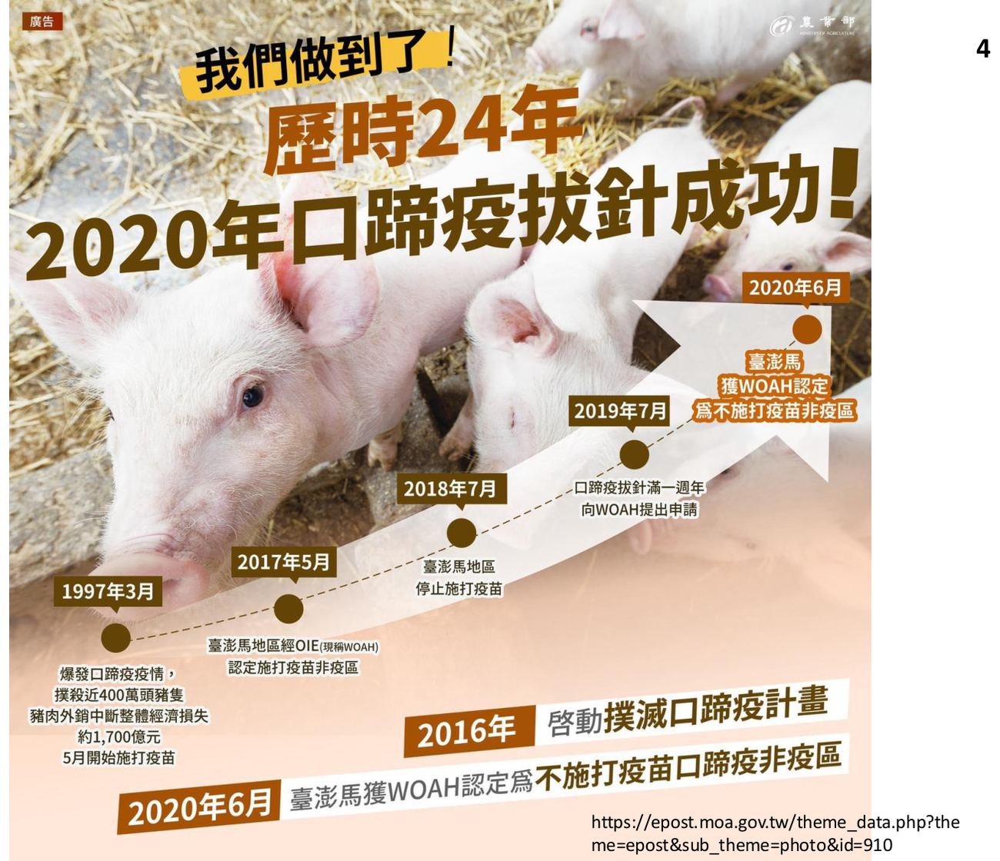
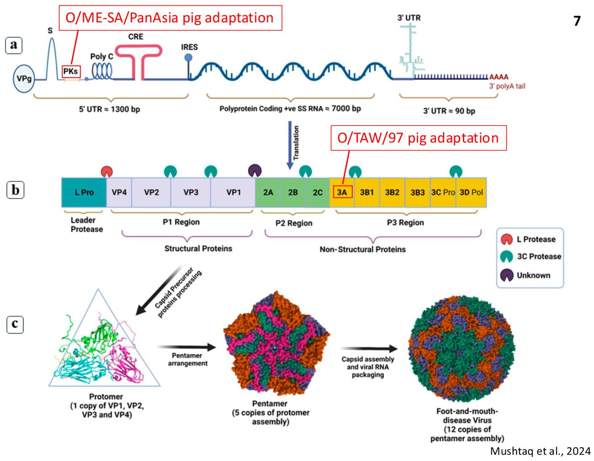
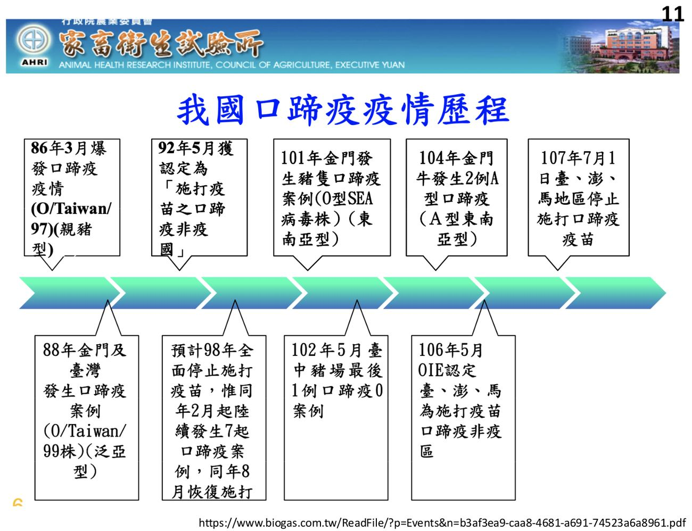
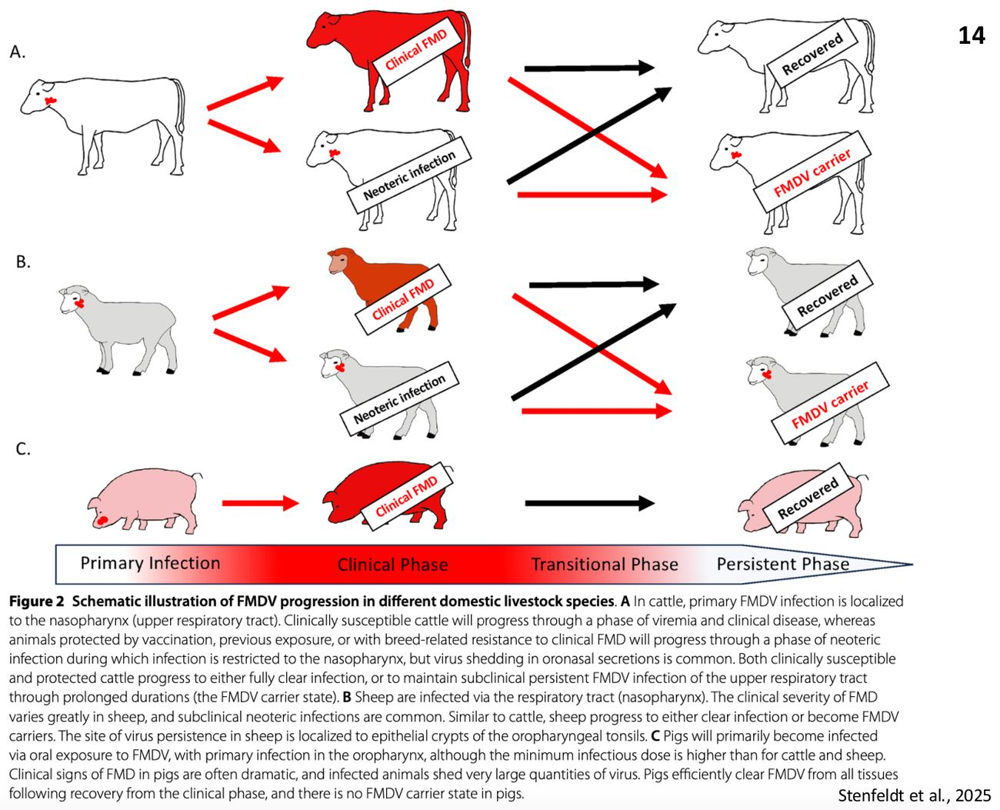
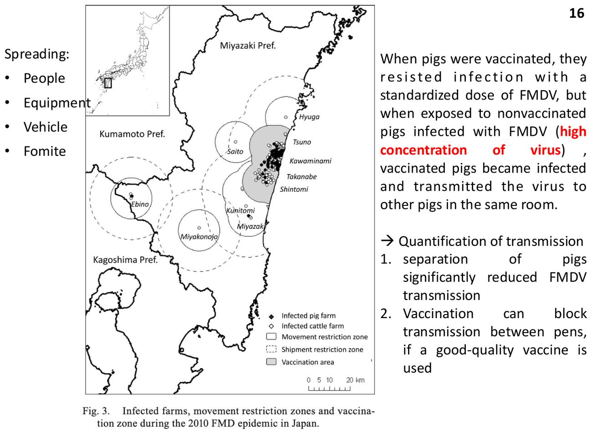
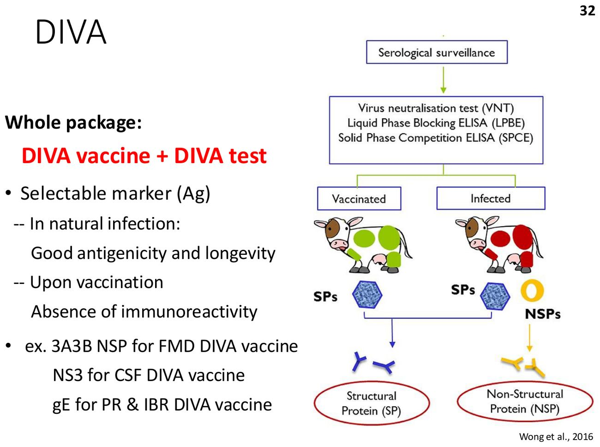

大方向與重點摘要
- 這章在講什麼
- 三種小 RNA 病毒科（Picornaviridae）造成的豬水疱性疾病：口蹄疫（Foot-and-mouth disease, FMD）、豬水疱病（Swine vesicular disease, SVD）、矽尼卡谷病毒感染症（Seneca Valley virus, SVV）。三者的水疱病灶無法區分，所以「豬的水疱性疾病在確診之前一律視為 FMD」。
- 為什麼重要
- FMD 是偶蹄類高傳染力水疱病，列入 WOAH 名錄，造成嚴重經濟損失。1997 年台灣口蹄疫撲殺近 400 萬頭豬、經濟損失約 1,700 億元，豬肉外銷中斷；2020 年 6 月台澎馬被 WOAH 認定為不施打疫苗的口蹄疫非疫區。講義附 12 題國考題（FMD 為主）。
- 這章要抓的重點
-
- FMDV：Aphthovirus、無封套 ssRNA(+)、7 個血清型（A、O、C、SAT1、SAT2、SAT3、Asia 1），彼此無交叉保護；非人畜共通。
- 宿主角色：豬＝增幅者（amplifier）、牛＝指示者（indicator，帶毒最久）、羊＝維持者（maintenance）。
- 臨床：發燒、口鼻蹄冠乳房水疱、跛行；發病率高（可達 100%）、死亡率低；仔豬心肌炎（虎斑心 tiger heart）猝死。
- 診斷與 DIVA：臨床與病變不具診斷性；病毒分離需 BSL-3；驗非結構蛋白（NSP，如 3A3B）抗體來區分感染與疫苗。
- 防治：撲殺、移動管制、生物安全；疫苗為不活化苗，不阻止初次感染、只減少排毒，保護僅 4–6 個月。
- SVD 與 SVV：SVD 腸病毒屬、單一血清型；SVV 新興、Senecavirus 屬、單一血清型、受體 ANTXR1；兩者都沒有商業疫苗。
- 容易混淆
-
- FMD 有 7 個血清型，沒有「D 型」（國考 113 年）。
- O/Taiwan/97 只感染豬（親豬型）；O/Taiwan/99（泛亞型）牛、羊、豬都感染。
- 豬是最大排毒者（增幅者），牛才是帶毒最久的。
- 四種水疱病：FMD、SVD、SVV 是 Picornaviridae；水疱疹（VES）是 Caliciviridae；水疱性口炎（VS）是 Rhabdoviridae，且是唯一人畜共通的。
三個病的主線必考
| 疾病 | 病原 | 宿主 | 一句話特徵 | 代表圖 |
|---|---|---|---|---|
| 口蹄疫（FMD） | FMDV（Aphthovirus），7 血清型 | 偶蹄類（豬、牛、羊、水牛） | 水疱、跛行；高傳染力；仔豬虎斑心 |  口蹄疫臨床症狀（p.22） |
| 豬水疱病（SVD） | SVDV（Enterovirus），單一血清型 | 只有豬 | 像 FMD 但輕很多；已自 WOAH 名錄移除 |  鼻與蹄的水疱（p.62） |
| 矽尼卡谷病毒感染症（SVV） | SVV-1（Senecavirus），單一血清型 | 只有豬 | 新興；臨床與 FMD 不可區分；台灣 2012 首例 |  鼻、蹄冠水疱與糜爛（p.76） |
內容以老師講義為主。講義附的國考題沒有標答案，答案依講義內容推得並註明依據頁碼；標「補充」的是講義以外的延伸。點任何「p.N」可在右側開啟講義對照。
口蹄疫：病毒、流行病學與傳播 FMD Etiology, Epidemiology & Transmission
口蹄疫是偶蹄類動物高傳染力的水疱性疾病，造成嚴重經濟損失，列入 WOAH（OIE）名錄。

病毒必考
- 口蹄疫病毒（FMDV）：Aphthovirus 屬，Picornaviridae 科。
- 無封套（VP1–4）、二十面體、20–30 nm；ssRNA(+)，約 8.3 kb。
- 7 個血清型：A、O、C、SAT1、SAT2、SAT3、Asia 1；彼此沒有交叉保護（C 型自 2004 年起全球未再偵測到）。
- 宿主：偶蹄目（cloven-hoofed）；非人畜共通。

流行病學必考
- 各血清型分布：O、A 最廣；SAT 在非洲；Asia 1 在亞洲。
- 美國與加拿大靠撲殺（stamping out）根除；墨西哥則是疫苗＋撲殺。

易感動物必考
- 最重要：豬、牛、小反芻獸（山羊、綿羊）、水牛。
- 有一定風險：麋鹿、鹿、駱馬、羊駝、雙峰駱駝（單峰駱駝不會）。
- 實驗感染：大鼠、刺蝟；曾報告年輕犬吃了被污染的肉後發生 FMDV 引起的心肌炎。
各動物的角色必考
| 豬 | 牛 | 綿羊與山羊 | |
|---|---|---|---|
| 流行病學角色 | 增幅者（Amplifier） | 指示者（Indicator） | 維持者（Maintenance） |
| 建立感染所需最低病毒量 | 10³ TCID₅₀ | 10 TCID₅₀ | 15 TCID₅₀ |
| 每隻每天排出氣膠病毒量 | 10⁶–10⁸·⁶ TCID₅₀ | 10⁴–10⁵ | 10⁴–10⁵ |
| 病毒持續存在時間 | <28 天 | 數年 | 數個月 |
| 臨床症狀 | 發燒、口蹄水疱、跛行 | 發燒、水疱、流涎 | 輕微且多變 |
「增幅者」是指豬排出的病毒量最大（比牛羊多約 100 倍），但需要較多病毒才感染（10³）；「指示者」牛最容易被感染（只要 10 TCID₅₀），所以牛先出現症狀、可當警訊。反芻動物的帶毒者最長記錄：牛 3.5 年、綿羊 9 個月、山羊 4 個月、非洲水牛 5 年、水牛 2 個月；豬不會成為持續帶毒者（p.13、p.28）。國考 110 年與 113 年就考這張表。


傳播必考
FMDV 存在於急性感染動物的所有分泌物與排泄物，包括呼出的空氣、水疱液。
- 直接接觸（最常見）：鼻對鼻或皮膚接觸（豬）；吃入受污染或未煮熟的食物（餿水餵豬 swill feeding）；含 FMDV 的氣膠（<20 km，豬傳牛）。
- 間接：受污染的人員、車輛、產品等（豬）。
- 最常見的三條擴散途徑：感染動物的移動、餵食受污染的動物產品、受污染物或媒介的移動（p.33）。
病毒穩定性理解
- 多數 FMDV 株在低溫與 pH 7–8 穩定；在環境中可保持感染力數週（依介質、起始濃度、濕度、溫度、pH 而異）。
- 對清潔劑與有機溶劑有抵抗力；鹼性、酸性與氧化性消毒劑有效。
- 豬屠體 4°C 保存 11 週仍可從水疱上皮分離到感染性病毒；死後肌肉 pH 下降，但骨髓、淋巴結與某些器官的 pH 不會 → 豬屍體堆肥處理。
口蹄疫：致病、臨床與病變 FMD Pathogenesis, Clinical Signs & Lesions
看到豬的口鼻或蹄冠水疱，要先當成 FMD；仔豬猝死要想到心肌炎。
致病機制必考
- 依宿主、劑量、病毒株、飼養條件而異。排毒：分泌物與水疱。
- 入侵：咽黏膜（複製）→ 淋巴結 → 病毒血症 → 散播到次級部位（複製）；或經受損皮膚。豬經口咽，反芻動物經鼻咽（oro-pig vs naso-ruminants）。
- 細胞受體：整合素（integrin）主要是 αvβ3 與 αvβ6——VP1；硫酸乙醯肝素（HS）——VP3（細胞培養適應株）；JMJD6——VP1 突變（細胞培養適應株）；巨噬細胞受體未知——VP1。
- 潛伏期（latent period）短於臨床潛伏期（incubation period）：還沒有症狀就已經在排毒（latent < incubation）。
潛伏期短於臨床潛伏期，代表感染豬在看到水疱之前就已排毒（講義寫「沒症狀就在排毒」），所以靠看症狀才隔離常常來不及（p.20）。
典型臨床症狀必考
- 潛伏期依宿主、劑量、毒株、免疫而異；場間傳播（氣膠與間接接觸）約 14 天。
- 發病率高（可達 100%），但死亡率通常低。
- 急性發燒。
- 水疱出現在鼻、舌或唇、口腔內、趾間、蹄冠上方、乳頭，以及皮膚壓力點。
- 沉鬱、流涎、咂嘴（chomping）、跛行、不願走動。
病變必考
- 棘層角質細胞氣球樣變性（ballooning degeneration）與嗜酸性增加。
- 受影響角質細胞壞死，繼之單核細胞與顆粒球浸潤。
- 形成水疱。
非典型表現：仔豬心肌炎（虎斑心）必考
- 仔豬猝死，因心肌炎（老虎心 tiger heart）；也可流產。
- 講義特別標註：相對少見的病變，但國考愛考。
- 心臟表面多灶性蒼白（左右心室）；顯微為心肌壞死與碎裂，間質水腫與混合單核細胞浸潤。
亞臨床感染理解
- 新生型亞臨床感染（neoteric SI）：感染早期沒有臨床症狀，但有口鼻分泌物排毒 → 可傳染（疫苗、先前暴露或天然抵抗所致）。可能造成大量傳播。
- 持續性亞臨床感染（persistent SI）（主要在反芻動物，豬不會）：臨床或亞臨床感染後的帶毒狀態；低度複製，幾乎沒有排毒；帶毒者的傳染力被認為很小；可能促成重組與病毒多樣性。
口蹄疫：鑑別、診斷、DIVA、防治與疫苗 FMD Diagnosis, DIVA, Control & Vaccination
口蹄疫防治的難點：病灶不能靠肉眼區分、疫苗只能減少排毒、血清型多又沒有交叉保護。
鑑別診斷：四種水疱性疾病必考
| 水疱性口炎（VS） | 豬水疱疹（VES） | 口蹄疫（FMD） | 豬水疱病（SVD） | 矽尼卡谷病毒（SVV） | |
|---|---|---|---|---|---|
| 病毒科 | Rhabdoviridae | Caliciviridae | Picornaviridae | Picornaviridae | Picornaviridae |
| 自然宿主 | 馬、牛、豬（人畜共通） | 豬 | 偶蹄類 | 豬 | 豬 |
| 流行區 | 美洲 | 已根除 | 非洲與亞洲 | 歐洲與亞洲（含台灣） | 全球（含台灣） |
- 水疱病灶與 FMDV 感染引起的無法區分。
- 豬的水疱性疾病在確診之前一律視為 FMD。
實驗室診斷必考
- 臨床症狀與病變不具診斷性（所有豬水疱性病毒病看起來都類似）。
- 病毒檢測（水疱材料；生物安全第三級 BSL-3）：分離病毒——感受性細胞株 BHK-21、LFBK-αVβ6、IB-RS-2、電子顯微鏡；抗原——ELISA（確認＋血清型鑑定）；核酸——RT-PCR、RT-qPCR。
- 血清學目的：①進出口個體證明（貿易）②確認疑似病例③估計感染盛行率或證明無感染④證明疫苗效力。方法：病毒中和、抗體 ELISA、偵測抗非結構蛋白（NSP）的抗體 → 區分感染與疫苗動物（DIVA）。
DIVA 疫苗 ＋ DIVA 檢驗。要有一個「可選擇的標記抗原」：自然感染時抗原性好、持續久；接種疫苗後沒有免疫反應性。例：FMD 用 3A3B NSP；CSF 用 NS3；PR 與 IBR 用 gE。因為不活化的 FMD 疫苗只有結構蛋白（SP）、沒有非結構蛋白（NSP），所以驗到 NSP 抗體就是真的感染過。國考 109 年：「使用疫苗地區，可針對何種抗體進行監測，判定是否有野外病毒感染？」答案是非結構性蛋白。

預防與控制必考
- 最常見擴散途徑：移動感染動物、餵食受污染的動物產品、受污染物或媒介的移動。
- 控制：撲殺感染與疑似動物（stamping out） → 移動管制與生物安全措施 → ±疫苗（全面接種或特定族群）→ 持續監測。
- 台灣 114 年口蹄疫擴大監測：豬 215 場、草食動物 194 場，結果全部陰性（p.34）。
疫苗必考
- 多數商業 FMD 疫苗是不活化疫苗，不阻止初次感染。
- 疫苗減少排毒、因此減緩傳播。
- 疫苗策略主要用於緊急使用，必須搭配嚴格生物安全（*2010 日本疫情）。
- 考量：七個血清型無或僅有限的交叉保護；容易擴散；保護反應只持續約 4–6 個月；8–12 週齡前有母源免疫干擾；接種動物可能發展為亞臨床感染。
豬水疱病 Swine Vesicular Disease
豬水疱病的臨床與 FMD 無法區分，只是更輕。
簡介與病毒必考
- 1966 年義大利首次報告；臨床與 FMD 無法區分的豬水疱病。
- 病原 SVDV 被懷疑從人類腸病毒演化而來。
- SVD 已自 WOAH 名錄移除。
- 講義引《Diseases of Swine》：「1997 年台灣口蹄疫爆發時，國內存在 SVDV 可能延誤了 FMD 病例的通報，這可能造成更多感染 FMDV 的豬場。」
- 豬水疱病病毒（SVDV）：Enterovirus 屬，Picornaviridae 科；無封套、二十面體、30–32 nm；ssRNA(+)，7.4 kb；單一血清型，至少 4 個抗原變異；只有豬是自然宿主；非人畜共通。
傳播必考
- 感染豬可在出現臨床症狀前 48 小時排毒（latent < incubation）。
- SVDV 在宿主外異常穩定。
- 移動亞臨床感染豬；直接接觸感染動物；接觸受污染環境（如排水系統）；圈欄間傳播（pen disease）。
- 吃入受污染食物（餿水）。
病毒穩定性必考
- 在廣泛 pH 範圍穩定；對清潔劑與有機溶劑有抵抗力。
- 在屍體與加工肉品中可感染數個月。
- 只有 1% 氫氧化鈉（NaOH）能適當地不活化 SVDV。
補充：國考考過「水疱性疾病的病毒在環境中不易被一般消毒劑清除，故使其被名為『pen disease』」這類敘述（2019 期中考古），重點就是 SVDV 對常見消毒劑有抵抗力、經圈欄間傳播。
致病機制理解
- 經皮膚或消化道黏膜進入；主要在上皮細胞複製。
- 病變主要在上皮組織，通常輕微或亞臨床。
- 嚴重度與年齡及環境條件（如潮濕的水泥地）有關；各株毒力因子不明。
臨床症狀與病變必考
- 潛伏期短；發病率不一、死亡率低。
- 症狀與 FMDV 感染類似但輕微得多：突然跛行、短暫發燒、蹄冠（通常在與蹄踵交界處）與趾間水疱、鼻吻周圍水疱（較少見）。
- （仔豬猝死與母豬流產——講義將此列為「不是 SVD 的特徵」）。
診斷與防治必考
- 病毒檢測（水疱材料）：病毒顆粒（電顯、分離）、抗原（ELISA）、核酸（RT-PCR；亞臨床病例可驗糞便樣本）。血清學：病毒中和、ELISA。
- 目前沒有商業疫苗。
- 預防：嚴格衛生、禁止餿水餵豬、例行監測、撲殺所有感染與接觸豬。
矽尼卡谷病毒感染症 Seneca Valley Virus
SVV 是近年快速演化、全球散播的新興豬水疱性疾病；台灣已有案例。
簡介與病毒必考
- 2002 年培養 PER.C6 細胞（永生化初代人類視網膜細胞）時，意外發現為培養液的污染物。
- 序列分析顯示 SVV 自 1988 年起就在美國豬群流行，可能 1985 年出現。
- SVV 是人類癌症的溶瘤病毒治療（oncolytic virotherapy）候選。
- 矽尼卡谷病毒（Senecavirus A）：Senecavirus 屬，Picornaviridae 科；無封套、二十面體、約 30 nm；ssRNA(+)，約 7.3 kb；單一血清型 SVV-1；只有豬是自然宿主；非人畜共通。
- 傳播途徑尚未證實：可能是直接接觸與糞口；一項研究顯示小鼠可帶有活病毒（小腸與糞便），蒼蠅可帶有病毒核酸。
- 受體：炭疽毒素受體 1（ANTXR1），介導在晚期內體的脫殼；沒有已知的病毒毒力因子。
臨床、病變與診斷必考
- 潛伏期短；發病率通常高，但死亡率低（<1 週齡仔豬例外）。
- 臨床與水疱病灶無法與 FMDV 感染區分：跛行與昏睡、發燒、鼻與蹄冠水疱與糜爛、新生仔豬下痢、虛弱與死亡率增加。
- 病毒檢測：電顯、分離；抗原 ELISA、IHC；核酸 RT-PCR、RT-qPCR、ISH。血清學：病毒中和、ELISA。
- 目前沒有商業疫苗；預防靠嚴格生物安全與例行監測。
台灣案例（2012 年 12 月，花蓮）必考
| 項目 | 內容 |
|---|---|
| 病史與症狀 | 花蓮縣一貫式豬場，在養 1,342 頭；12/22 通報，上市肉豬蹄部水疱；肉豬舍 8 欄（7 月齡肉豬 164 頭）45/164（27%）走動困難，鼻鏡與腳蹄病變 |
| 組織病變 | 鼻鏡：角質層增厚、角化過度、角化不全、局部糜爛、附著壞死細胞碎屑。蹄冠：表皮外層壞死、棘細胞增生腫脹空泡化形成水疱、皮釘深入真皮 |
| 實驗室診斷 | 血清學 ELISA 抗體——FMD 與 SVD 陰性；RT-PCR——FMD、SVD、水疱性口炎（VS）、豬水疱疹（VES）都陰性；EBK（胚胎牛腎）細胞分離病毒；Ag-ELISA FMD、SVD 陰性；電顯見無封套二十面體顆粒，25 nm（Picornavirus）；非預期核酸片段定序，與 SVV 序列相似度 98% |
| 疫情控制 | 12/22 採樣送驗、移動管制，依「口蹄疫防疫作業標準」對疑患與同欄豬隻當日預防性撲殺（4 欄 107 頭，45 頭有水疱病灶）；12/23 完成撲殺並全場補強一劑口蹄疫疫苗；環境消毒；3 公里內偶蹄類動物場訪視皆無異狀 |
| 後續 | 台灣首例 SVV 感染症；SVV 僅發現於成豬，沒有哺乳或仔豬感染病例；單純 SVV 感染的流行病學調查致死率 0%；自然宿主與致病機轉不明，有報告指出可經餵飼被鼠科動物污染的飼料感染、經運輸車輛散播 → 推測傳播源為老鼠；非 OIE 名錄疾病 |
| 影響 | SVV 資訊納入水疱性疾病基層防疫宣導；防檢局修訂「口蹄疫防疫作業標準」中水疱性病原的實驗室診斷鑑定程序；2018 年 4 月（清明節）台南肉品市場繫留欄，2 隻肉豬出現水疱症狀，病毒分離與分子診斷確認為台灣第二例 SVV |
講義所附歷屆國考題 National Exam Questions
講義附的國考題沒有標答案，下列答案是依講義內容推得，並用阿摩線上測驗（yamol）的作答票數與網友詳解核對過幾題（109 年 FMD 複選 ①④、110 年 FMD、O/Taiwan/99；票數最高者與我的答案一致，官方答案欄需登入才看得到，屬旁證）。先自己作答，再點「顯示答案」。
同上題。
(D) 對：仔豬 FMD 心肌炎，心臟表面蒼白斑，稱虎斑心（tiger heart）（p.26）。
(A) 白肌病是硒與維生素 E 缺乏。
(B) cor villosum（絨毛心）是纖維素性心包炎的絨毛狀外觀。
(C) shaggy heart 是纖維素性心外膜炎的另一說法（補充）。
考試方向（推測）
以下是依講義強調與國考題推測的出題方向，考試範圍以老師上課為準。
| 可能考法 | 答題重點 |
|---|---|
| FMD 病毒特性 | Aphthovirus、無封套 ssRNA(+)、7 血清型無交叉保護、偶蹄類、非人畜共通 |
| 豬牛羊角色（表格題） | 豬＝增幅者（排毒最多、<28 天）、牛＝指示者（最易感、數年）、羊＝維持者（數月） |
| 台灣 FMD 史 | 1997 O/Taiwan/97 親豬型 → 1999 O/Taiwan/99 泛亞型 → 2018 停止施打 → 2020 WOAH 非疫區 |
| 傳播 | 直接接觸、餿水、氣膠（<20 km）、污染人車；潛伏期短於臨床潛伏期 |
| 臨床與病變 | 水疱、跛行；棘層氣球樣變性；仔豬虎斑心（國考愛考） |
| 水疱性疾病鑑別 | FMD、SVD、SVV（小 RNA）、VES（Calici）、VS（Rhabdo；人畜共通）；一律先當 FMD |
| 診斷與 DIVA | BSL-3；水疱材料；BHK-21 等細胞；ELISA、RT-PCR；NSP（3A3B）區分感染與疫苗 |
| FMD 疫苗 | 不活化苗、不阻止初次感染、減少排毒；保護 4–6 月；母源干擾 8–12 週；緊急使用 |
| SVD | Enterovirus、單一血清型；1% NaOH；pen disease；台灣 1997 延誤 FMD 通報 |
| SVV | 新興；受體 ANTXR1；台灣 2012 花蓮首例、2018 台南第二例；鼠為疑似傳播源 |
練習題 Practice Quiz
先自己作答再點開答案。最後 2 題是臨床情境題。